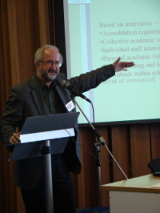

|
 |
LEARNING OUTCOMES AND CURRICULUM DEVELOPMENT IN PSYCHOLOGY IN AUSTRALIAThis project was designed to produce an evaluative overview of courses in Psychology in Australia, with a focus on the specification and assessment of learning outcomes, and a goal to identify strategic directions for universities in order to enhance teaching and learning. The work was undertaken by a consortium from several quite different universities: The University of Queensland, The University of Tasmania, and Southern Cross University. Together, these universities represent a major, large metropolitan university, a smaller multi-campus university, and a regional university with a newly developing Department of Psychology. A preliminary report was provided at the 2nd International Conference on the Teaching of Psychology, held in Brazil in 2005, and the final project report has now been submitted to the Australian funding agency, the Carrick Institute for Learning and Teaching in Higher Education. All 38 publicly-funded Australian universities offer degree programs in Psychology, and there is a well established accreditation process which specifies standards in areas such as curriculum, staffing and facilities. In addition, Australian universities are subject to quality reviews on a 5-year cycle by a central agency which was established for this purpose. The results of these University quality reviews, and the annual evaluations of courses by graduating students, are all available on public web-sites. As can be seen, university education in Australia operates in an environment which has a strong focus on public accountability as might be expected in a predominantly federally funded sector. The current project has provided an analysis of the scientist-practitioner model and its role in curriculum design, a review of current challenges at a conceptual level, and consideration of the implications of recent changes to universities relating to internationalisation and technological advances. Almost all Psychology departments in Australia participated in surveys and workshops during the study. An analysis was also conducted of the publicly available data which provide a mandatory annual report on student evaluations of teaching and course experience in all Australian universities. An analysis of these data revealed that Psychology, as a discipline, performs at a level which is consistent with the average performance of other courses on measures of student satisfaction, perceived quality of teaching and other measures. On average, smaller, regional universities, tend to be associated with higher rating of teaching quality by students than larger, metropolitan universities. The reverse is true for overall course satisfaction which is likely to be influenced by perceptions of resources and other aspects of the experience of students on campuses of differing sizes. As a result of the project, the Australian Psychology Educators Network which has now evolved into the Teaching and Learning Interest Group of the Australian Psychological Society. The report has been influential in the development of expected graduate attributes of students who complete psychology courses, and these objectives have been incorporated into the accreditation standards for Psychology courses in Australia. The project has also contributed towards the consideration of a variety of structural and curriculum models for the education and training of psychologists in Australia in the future. |
© 2008 Victor Karandashev